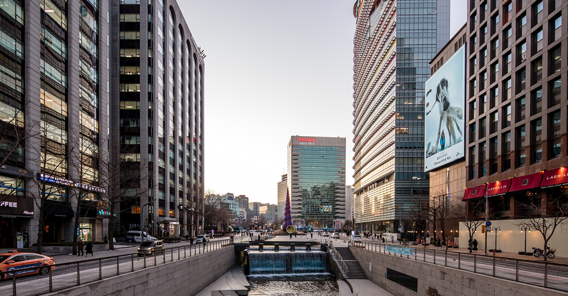
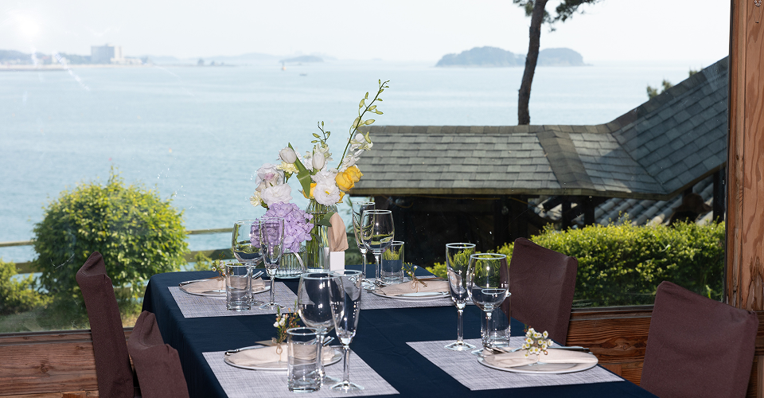

Refining the Rhythm of Your Life: From Business to Beyond
도심의 비즈니스와 전국 5개 거점의 휴양을 잇는 독보적인 혜택의 체계
도심의 한국빌딩 인프라와 5개 섬(상화원, 동검도, 안면도, 제주, 조도)의 자산은 입주사 멤버들을 위한 혜택입니다.
공간의 규모만큼이나 깊이 있는 멤버십 서비스를 통해 입주사 멤버들에게 차별화된 가치를 더합니다.
-
BRAND STORY
서울 사대문 안에서 하나로 통합되는 한국빌딩
한국의 핵심 인프라가 집중된 서울 사대문 안, 한국의 정치, 경제, 문화가 응집된 거대한 흐름의 중심에는 언제나 ‘한국빌딩’이 있었습니다. 광화문의 푸른 녹음과 청계천의 활기, 고궁의 단아함과 금융가의 긴장감이 공존하는 이 특별한 입지는 수십 년간 한국빌딩이 지켜온 자부심이자 역사입니다.
THELINK H는 이러한 입지적 자산을 입주사 임직원들의 일상을 위한 실질적인 인프라로 전환하기 위해 탄생했습니다. ‘한국빌딩’을 중심으로 입주사의 편익을 최우선적으로 고려한 고품격 대고객 네트워킹 서비스 플랫폼인 THELINK H를 통해, 빌딩과 빌딩, 도심과 자연을 유기적으로 잇는 차별화된 서비스의 가치를 실현합니다.
-

4개의 랜드마크 빌딩을 하나로
통합한 비즈니스 네트워크
서울 중심부의 역사인 청계·을지·소공·종로 한국빌딩을 유기적으로 연결합니다. 빌딩 간 경계를 넘어선 통합 네트워킹을 구축하여 입주사 임직원에게 확장된 비즈니스 편의를 제공합니다. 주차·발렛, 라운지 공유, F&B 할인, 공유오피스 연계, 디지털 광고 제휴 등 입주사 성장을 돕는 실효성 있는 서비스들을 점진적으로 확대해 나갈 예정입니다.
-
도심의 비즈니스 인프라를 넘어,
자연 속 휴양 자산으로 예우를 확장
비즈니스 네트워킹을 외부로 확장해 서비스의 깊이를 더합니다. 도심 사무공간을 넘어 보령 상화원 및 한국빌라, 강화 동검도, 오픈 예정인 제주 상화원과 조도까지 한국빌딩만의 휴양 자산을 통한 쉼의 공간을 제공합니다. 기업 워크숍, 세미나, 웨딩, 워케이션 및 개인 숙박 등 차별화된 혜택으로 품격 있는 휴식과 성공적인 행사를 지원합니다.
